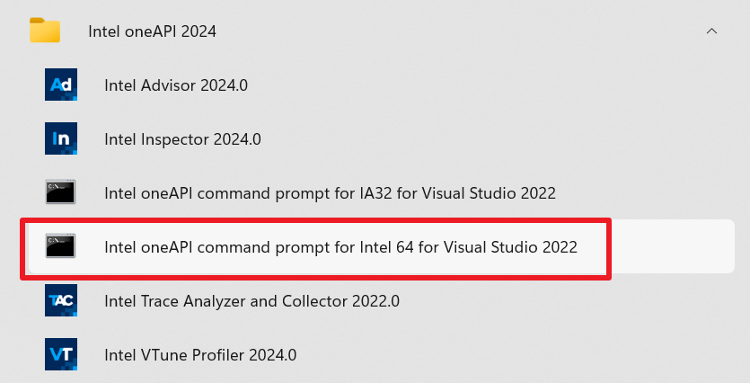

Building on Windows¶
Dependencies¶
Python >= 3.10
NumPy == 2.1.0 (Required only for building the wheel; the built wheel is compatible with NumPy 1.24.3 and above, including 2.x versions)
intel-fortran-rt
dpcpp-cpp-rt
Step-by-Step Instructions¶
1. Install Intel® HPC Toolkit¶
Download and install the Intel® HPC Toolkit from the official website.
2. Launch Intel oneAPI Command Prompt¶
After installation, open the Intel oneAPI command prompt for Intel 64 for Visual Studio 2022 (or higher versions) from the Start menu.
{kind=link}

Opening the Command Prompt¶
3. Switch to PowerShell Mode¶
In the opened command prompt window, switch to PowerShell mode by entering the following command:
$ powershell
4. Activate Python Environment¶
Activate your Anaconda environment or a Python virtual environment (refer to venv):
$ conda activate myenv
Note
Replace myenv with the name of your actual environment.
5. Install Required Dependencies¶
Install the necessary dependencies listed in the build_requirement_windows.txt file (root path) by running:
$ pip install -r build_requirement_windows.txt
The contents of build_requirement_windows.txt are as follows:
meson-python
build
ninja
numpy==2.1.0
6. Build the Wheel Package¶
Execute the following PowerShell script to build the wheel package:
$ .\build_wheel_windows.ps1
The contents of build_wheel_windows.ps1 are as follows:
$Env:CC="cl"
$Env:FC="ifx"
Get-ChildItem -Path . -Recurse -Directory -Filter __pycache__ | Remove-Item -Recurse -Force
# https://github.com/mesonbuild/meson-python/issues/507
python -m build --wheel --no-isolation
Explanation
This script sets essential environment variables (e.g.,
CCandFC) and removes__pycache__directories to ensure a clean build.The
--no-isolationflag prevents the use of an isolated build environment, speeding up the process.The script addresses a known issue with
meson-python, as documented in this GitHub issue.
Additional Notes¶
Environment Setup: Ensure the Intel® HPC Toolkit is properly installed and that the compiler environment is correctly configured via the Intel oneAPI command prompt.
NumPy Compatibility: While NumPy 2.1.0 is used during the wheel build process, the resulting wheel is compatible with NumPy 1.24.3 and higher, including 2.x versions.
Troubleshooting: The
build_wheel_windows.ps1script includes a workaround for a knownmeson-pythonissue; see the linked GitHub reference in the script comments for details.